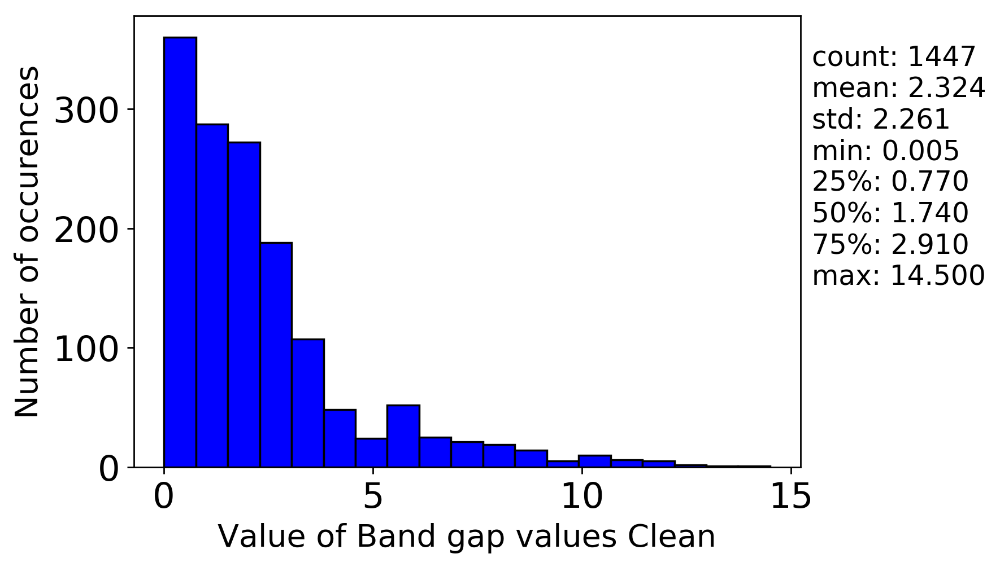

MAterial Science Tools - Machine Learning
2020-03-06 19:42:38
Files
log.log
log.log
errors.log
errors.log
generate_features.conf
generate_features.conf
input_data_statistics.csv
input_data_statistics.csv
generated_features.csv
generated_features.csv
generated_features_no_constant_columns.csv
generated_features_no_constant_columns.csv
clusters.csv
clusters.csv
DoNothing - normalized.csv
normalized.csv
DoNothing - DoNothing - selected.csv
selected.csv
MinMaxScaler - normalized.csv
normalized.csv
MinMaxScaler - DoNothing - selected.csv
selected.csv
Plots
target_histogram.png
